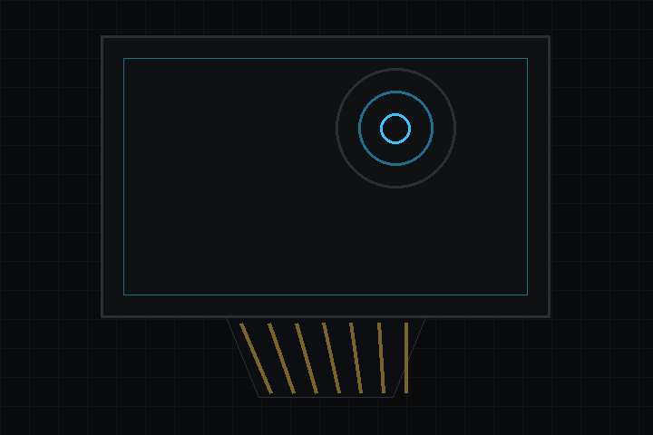

- 다음에 의해 생성됨 :
 1.18.0
1.18.0
|
deki-lovyangfx-integration 0.20.2
Deki 패키지 레퍼런스
|

LovyanGFX 1.2.19를 통한 임베디드 디스플레이와 터치. 일반적인 SPI/병렬 TFT와 FT6336U 정전식 터치 패널을 구동합니다.
저장소: github.com/dekiengine/deki-lovyangfx-integration · 최신 릴리스: 0.20.0 · 엔진 0.19.0 이상 필요 · 의존: deki-i2c, deki-input
DekiEditor --packages-add deki-lovyangfx-integration <project> 또는 패키지 관리자로 설치합니다. 엔진 자체의 컴포넌트와 C++ API는 Deki 문서에 있습니다.
에디터에는 LovyanGFX Integration(으)로 표시됩니다.
| 컴포넌트 | 카테고리 | 설명 |
|---|---|---|
| LGFXDisplayPanel | LovyanGFX | LovyanGFX를 통해 SPI, QSPI 또는 병렬 버스로 디스플레이 패널(ILI9341, ST7789, GC9A01, RM67162 AMOLED 등)을 구동합니다. |
| LGFXTouchPanel | LovyanGFX | LovyanGFX를 통해 터치 컨트롤러(FT5x06, GT911, CST816S, XPT2046)를 읽습니다. |
빌드에서 뺄 수 있는 부분입니다. define이 있는 기능은 그 define으로 켜고 끄며, 나머지는 컴포넌트와 함께 제거됩니다.
| 기능 | define | 기본값 |
|---|---|---|
| Display Panel | DEKI_FEATURE_LGFX_DISPLAY_PANEL | 켜짐 |
| Touch Panel | DEKI_FEATURE_LGFX_TOUCH_PANEL | 켜짐 |
LovyanGFX를 통해 SPI, QSPI 또는 병렬 버스로 디스플레이 패널(ILI9341, ST7789, GC9A01, RM67162 AMOLED 등)을 구동합니다.
인스펙터 이름: LGFX 디스플레이 패널 · 카테고리: LovyanGFX · 유형: DekiLovyanGfx::LGFXDisplayPanel
| 속성 | 유형 | 기본값 | 제약 | 설명 |
|---|---|---|---|---|
| panelType | enum | "ILI9341" | ILI9341, ST7789, ST7735, GC9A01, SSD1351, ST7789P3, RM67162, ST7789TDeck | 디스플레이 패널 드라이버 IC |
| panelWidth | int32 | 320 | 1~1024 | 디스플레이 너비 (픽셀) |
| panelHeight | int32 | 240 | 1~1024 | 디스플레이 높이 (픽셀) |
| rotation | enum | "Landscape" | Portrait, Landscape, Portrait180, Landscape270, PortraitMirror, LandscapeMirror, Portrait180Mirror, Landscape270Mirror | 디스플레이 회전 |
| offsetX | int32 | 0 | 픽셀 오프셋 X (원점이 0이 아닌 패널용) | |
| offsetY | int32 | 0 | 픽셀 오프셋 Y (원점이 0이 아닌 패널용) | |
| invertColor | bool | false | 디스플레이 색상을 반전합니다 | |
| rgbOrder | bool | false | R과 B 색상 채널을 서로 바꿉니다 (RGB / BGR) | |
| busType | enum | "Parallel8bit" | SPI, Parallel8bit, Parallel16bit, QSPI | 디스플레이 버스 종류 |
| mosiPin | int32 | -1 | -1~48; busType이(가) 허용할 때 표시 | SPI MOSI 핀 |
| misoPin | int32 | -1 | -1~48; busType이(가) 허용할 때 표시 | SPI MISO 핀 (-1 = 사용 안 함) |
| clkPin | int32 | -1 | -1~48; busType이(가) 허용할 때 표시 | SPI 클럭 핀 |
| dcPin | int32 | -1 | -1~48; busType이(가) 허용할 때 표시 | SPI 데이터/커맨드 핀 |
| spiPort | int32 | 0 | 0~2; busType이(가) 허용할 때 표시 | SPI 호스트입니다. ESP-IDF의 번호로 지정합니다 (ESP32-S3에서는 1 = SPI2, 2 = SPI3) |
| spiWriteHz | int32 | 40000000 | busType이(가) 허용할 때 표시 | SPI 쓰기 주파수 (Hz) |
| io0Pin | int32 | -1 | -1~48; busType이(가) 허용할 때 표시 | QSPI 데이터 핀 IO0 |
| io1Pin | int32 | -1 | -1~48; busType이(가) 허용할 때 표시 | QSPI 데이터 핀 IO1 |
| io2Pin | int32 | -1 | -1~48; busType이(가) 허용할 때 표시 | QSPI 데이터 핀 IO2 |
| io3Pin | int32 | -1 | -1~48; busType이(가) 허용할 때 표시 | QSPI 데이터 핀 IO3 |
| parWriteHz | int32 | 40000000 | busType이(가) 허용할 때 표시 | 병렬 버스 쓰기 주파수 (Hz) |
| rsPin | int32 | -1 | -1~48; busType이(가) 허용할 때 표시 | 레지스터 셀렉트 / 데이터-커맨드 핀 (RS/DC) |
| wrPin | int32 | -1 | -1~48; busType이(가) 허용할 때 표시 | 병렬 버스 쓰기 스트로브 핀 |
| rdPin | int32 | -1 | -1~48; busType이(가) 허용할 때 표시 | 병렬 버스 읽기 스트로브 핀 (-1 = 사용 안 함) |
| d0Pin | int32 | -1 | -1~48; busType이(가) 허용할 때 표시 | 병렬 데이터 핀 D0 |
| d1Pin | int32 | -1 | -1~48; busType이(가) 허용할 때 표시 | 병렬 데이터 핀 D1 |
| d2Pin | int32 | -1 | -1~48; busType이(가) 허용할 때 표시 | 병렬 데이터 핀 D2 |
| d3Pin | int32 | -1 | -1~48; busType이(가) 허용할 때 표시 | 병렬 데이터 핀 D3 |
| d4Pin | int32 | -1 | -1~48; busType이(가) 허용할 때 표시 | 병렬 데이터 핀 D4 |
| d5Pin | int32 | -1 | -1~48; busType이(가) 허용할 때 표시 | 병렬 데이터 핀 D5 |
| d6Pin | int32 | -1 | -1~48; busType이(가) 허용할 때 표시 | 병렬 데이터 핀 D6 |
| d7Pin | int32 | -1 | -1~48; busType이(가) 허용할 때 표시 | 병렬 데이터 핀 D7 |
| d8Pin | int32 | -1 | -1~48; busType이(가) 허용할 때 표시 | 병렬 데이터 핀 D8 |
| d9Pin | int32 | -1 | -1~48; busType이(가) 허용할 때 표시 | 병렬 데이터 핀 D9 |
| d10Pin | int32 | -1 | -1~48; busType이(가) 허용할 때 표시 | 병렬 데이터 핀 D10 |
| d11Pin | int32 | -1 | -1~48; busType이(가) 허용할 때 표시 | 병렬 데이터 핀 D11 |
| d12Pin | int32 | -1 | -1~48; busType이(가) 허용할 때 표시 | 병렬 데이터 핀 D12 |
| d13Pin | int32 | -1 | -1~48; busType이(가) 허용할 때 표시 | 병렬 데이터 핀 D13 |
| d14Pin | int32 | -1 | -1~48; busType이(가) 허용할 때 표시 | 병렬 데이터 핀 D14 |
| d15Pin | int32 | -1 | -1~48; busType이(가) 허용할 때 표시 | 병렬 데이터 핀 D15 |
| csPin | int32 | -1 | -1~48 | 칩 셀렉트 핀 (-1 = 사용 안 함) |
| rstPin | int32 | -1 | -1~48 | 리셋 핀 (-1 = 연결 안 됨) |
| blPin | int32 | -1 | -1~48 | 백라이트 핀 (-1 = 없음) |
| blPwmChannel | int32 | 0 | 0~15 | 백라이트용 PWM 채널 |
| blInvert | bool | false | 백라이트 신호를 반전합니다 (액티브 Low) | |
| blBrightness | int32 | 255 | 0~255 | 시작 시 백라이트 밝기입니다. 0-255 (PWM 듀티). 255는 핀을 High로 유지합니다. 펄스 수로 밝기를 낮추는 백라이트 드라이버(LilyGO T-Deck의 것)는 255가 필요합니다. PWM 파형을 쓰면 밝기 단계를 계속 오가며 깜박입니다 |
| swapBytes | bool | false | 디스플레이로 전송할 때 RGB565 바이트 순서를 바꿉니다 | |
| memoryWidth | int32 | 320 | 1~1024 | 패널 메모리상의 너비 (보이는 너비와 다를 수 있습니다) |
| memoryHeight | int32 | 240 | 1~1024 | 패널 메모리상의 높이 (보이는 높이와 다를 수 있습니다) |
| usePsram | bool | false | 프레임 버퍼를 내부 RAM 대신 PSRAM에 둡니다. 화면 한 장 분량의 내부 RAM이 확보되지만, 그리기가 느려집니다 | |
| doubleBuffer | bool | false | 비동기 DMA에 더블 버퍼링을 사용합니다 (렌더링과 디스플레이 전송을 겹쳐서 수행) | |
| asyncPresent | bool | false | 다음 프레임을 그리는 동안 칩의 다른 코어에서 각 프레임을 전송합니다. 한 프레임에 드는 시간이 그리기와 전송의 합이 아니라 둘 중 긴 쪽이 됩니다. 외부 메모리(PSRAM) 2프레임 분량과 듀얼 코어 칩이 필요합니다. 프레임 전체를 표시하는, 바이트 순서를 바꾸는 패널(swapBytes)용입니다. |
LovyanGFX를 통해 터치 컨트롤러(FT5x06, GT911, CST816S, XPT2046)를 읽습니다.
인스펙터 이름: LGFX 터치 패널 · 카테고리: LovyanGFX · 유형: DekiLovyanGfx::LGFXTouchPanel
| 속성 | 유형 | 기본값 | 제약 | 설명 |
|---|---|---|---|---|
| driverType | enum | "FT5x06" | FT5x06, GT911, CST816S, XPT2046 | 터치 컨트롤러 IC |
| i2cPort | int32 | 0 | 0~3; driverType이(가) 허용할 때 표시 | I2C 버스 포트 (부트 씬의 I2C 버스 컴포넌트와 일치해야 합니다) |
| csPin | int32 | -1 | -1~48; driverType이(가) 허용할 때 표시 | SPI 칩 셀렉트 핀 (-1 = 사용 안 함) |
| mosiPin | int32 | -1 | -1~48; driverType이(가) 허용할 때 표시 | SPI MOSI 핀 (-1 = 사용 안 함) |
| misoPin | int32 | -1 | -1~48; driverType이(가) 허용할 때 표시 | SPI MISO 핀 (-1 = 사용 안 함) |
| clkPin | int32 | -1 | -1~48; driverType이(가) 허용할 때 표시 | SPI 클럭 핀 (-1 = 사용 안 함) |
| intPin | int32 | -1 | -1~48 | 터치 이벤트용 인터럽트 핀 (-1 = 폴링 모드) |
| rstPin | int32 | -1 | -1~48 | 터치 컨트롤러 리셋 핀 (-1 = 연결 안 됨) |
| xMin | int32 | 0 | 터치 컨트롤러가 보고하는 원시 X의 최솟값으로, 디스플레이를 회전하기 전 패널의 너비 방향 값입니다 | |
| xMax | int32 | 239 | 터치 컨트롤러가 보고하는 원시 X의 최댓값으로, 디스플레이를 회전하기 전 패널의 너비 방향 값입니다 (240x320 패널을 가로로 표시하는 경우: 239) | |
| yMin | int32 | 0 | 터치 컨트롤러가 보고하는 원시 Y의 최솟값으로, 디스플레이를 회전하기 전 패널의 높이 방향 값입니다 | |
| yMax | int32 | 319 | 터치 컨트롤러가 보고하는 원시 Y의 최댓값으로, 디스플레이를 회전하기 전 패널의 높이 방향 값입니다 (240x320 패널을 가로로 표시하는 경우: 319) | |
| offsetRotation | enum | "None" | None, CW_90, CW_180, CW_270, Mirror, Mirror_CW_90, Mirror_CW_180, Mirror_CW_270 | 패널에 대한 터치 컨트롤러의 방향으로, 디스플레이 회전에 더해집니다. 컨트롤러가 패널 자체의 방향으로 좌표를 보고하면 없음입니다 |
| busShared | bool | false | 터치가 디스플레이와 SPI 버스를 공유하면 켭니다 |
변경 내역은 영어로 되어 있습니다.
이전 릴리스: CHANGELOG.md
패키지의 리플렉션 데이터에서 생성했습니다(엔진 0.20.2). 속성 이름은 씬 파일에서 쓰는 키입니다. 이름을 바꿔도 별칭이 유지됩니다(호환성).